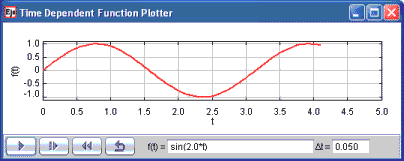

[The Time Dependent Function Plotter displays data that is generated at a constant rate.]
To convey a sense of time development, the Time Dependent Function Plotter displays a function u = f(t) in real time by generating data at a constant (fixed) rate a shown in the screen shot. The data is generate in the Evolution workpanel with the following code:
t += dt;
// advance time
u = _view.analyticFunction.evaluate(t); // evaluate function
The independent variable t and the dependent variable u are computed 20 times per second and this data is displayed in a Trace within the model's plotting panel because the t and u variables are connected (bound) the X and Y Trace properties.
Note that the Time Dependent Function buttons. The reset button rests the simulation to its default state by invoking the model's _reset() method whereas the time reset button invokes the code within the initialization workpanel. Open the model and EJS and examine the buttons in the Tree of Elements to see how easy is is to perform these actions.
The following EJS models demonstrate how to plot functions in EJS. These models are listed in order of complexity.
The Time Dependent Function Plotter model was created by Wolfgang Christian and Francisco Esquembre using the Easy Java Simulations (EJS) version 4.1 authoring and modeling tool. You can examine and modify a compiled EJS model if you run the model (double click on the model's jar file), right-click within a plot, and select "Open Ejs Model" from the pop-up menu. You must, of course, have EJS installed on your computer. Information about Ejs is available at: <http://www.um.es/fem/Ejs/> and in the OSP ComPADRE collection <http://www.compadre.org/OSP/>.